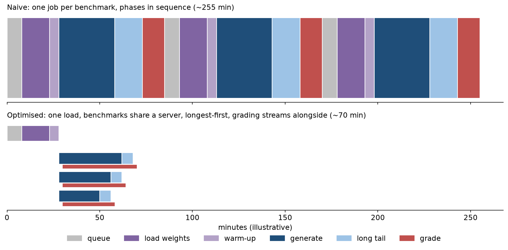

Eval study notes · Coding practice set
Every eval platform is asked to improve evaluation throughput and scheduling efficiency. That sentence hides most of the hard engineering in an eval platform, because an evaluation sweep is an unusual workload: bursty, heterogeneous, dominated by inference rather than training, and competing for the same GPUs as the training runs it serves. This chapter explains where eval time actually goes, how to make it go faster, and how eval jobs should share a cluster with training. The goal is that when an interviewer asks “evals for a new checkpoint take six hours and researchers want them in one; what do you do?”, you have a structured answer.
A checkpoint lands every two hours from a large pretraining run. The in-training suite takes three hours to complete per checkpoint, so results fall further behind the run every day, and researchers are making decisions on data that is a day stale. Before you read on, list where you think those three hours go.
The naive assumption is that eval time is proportional to the number of questions. In practice, a profile of a real eval job usually shows four very different components, and the biggest is often not inference at all.
The first is start-up. Before a single token is generated, the job has to be scheduled onto GPUs (queue wait), pull a container image, load the checkpoint weights from storage (tens to hundreds of gigabytes, for a large model at the time of writing), initialise the inference engine, compile kernels or capture CUDA graphs, and pass a health check. For a large model this easily takes ten to thirty minutes, and if every benchmark in a suite is a separate job, each one pays it again. The single most effective throughput fix on many platforms is simply to load the model once and run many benchmarks against the same server.
The second is the prompt-processing work, called prefill: running the model over the input tokens. For likelihood-scored multiple-choice benchmarks this is all the work there is, since nothing is generated, and it is compute-bound and efficient on GPUs. Few-shot prompts repeat the same exemplars at the start of every item, so prefix caching in the inference engine (vLLM’s automatic prefix caching, SGLang’s RadixAttention) can skip most of the repeated computation.
The third is generation, called decode: producing output tokens one at a time. Decode is bound by memory bandwidth rather than compute, since each step reads all the model weights to produce one token per sequence, so GPUs are only efficient at decode when many sequences are batched together. Modern engines do this with continuous batching (new requests join the batch as soon as others finish rather than waiting for a whole batch to complete) and paged KV-cache memory management (vLLM’s PagedAttention, 2023), which together raise throughput many-fold over naive batching. The practical implication for a runner is that it must keep hundreds of requests in flight per inference server to keep it saturated; a runner that sends requests one at a time, or in fixed batches, wastes most of the GPU.
The fourth, and the one that has grown fastest with reasoning models, is the long tail. If most answers are 2,000 tokens but one in a hundred runs to 32,000, the job does not finish until the slowest sequence does, and in the last part of the run the GPU is processing a handful of long sequences at very low utilisation. This is the “tail at scale” problem familiar from distributed systems, and it has similar fixes: cap maximum output length per benchmark deliberately (and record truncations as a distinct outcome rather than silently as wrong), schedule the longest-expected items first so they overlap with the bulk, shard so that no single worker gets several long items, and let workers that finish early steal work from slow ones. The same problem dominates RL training, where generating rollouts can take more than 90 percent of each step; the APRIL paper (September 2025) over-provisions rollout requests, stops once enough have finished, and recycles the unfinished ones into the next step, reporting 22 to 44 percent more rollout throughput. An eval runner can borrow the idea for repeated sampling, though not for a fixed benchmark where every item must be answered.
Grading adds a fifth component when it is not overlapped with generation. Code sandboxes and judge calls are slow and can become the bottleneck if they only start after all generation is done. Streaming each completed answer to the grader pool as it finishes, rather than in a phase after generation, overlaps the two.

For each checkpoint, someone has to choose how many GPUs to use and how to split the model across them. Tensor parallelism (splitting each layer across GPUs) is needed when a model does not fit on one GPU and reduces per-request latency, but it adds communication overhead. For throughput-oriented eval work, the usual rule is to use the smallest tensor-parallel degree that fits the model with enough KV-cache memory for a large batch, and then run several independent replicas (data parallelism) to use the rest of the GPUs, splitting the benchmark items among them. Two replicas of a model on four GPUs each will generally evaluate faster than one replica on eight. Mixture-of-experts models add expert parallelism and their own trade-offs. The interview point is not the exact rule but knowing that the choice is a throughput-versus-latency trade-off and that eval is a throughput workload.
Model format matters too. A training checkpoint is stored in the training framework’s sharded format, often in higher precision and with optimiser state alongside; the eval system has to convert or load it into the inference engine’s format, and that conversion step is a classic source of both slowness and silent bugs (a wrong rotary-embedding setting, a mismatched tokenizer, a missing chat template), all of which produce a model that runs fine and scores badly.
Interviewers like a quick estimate, and it is worth having the shape of one ready; treat every number in this paragraph as an illustrative estimate, not a measured figure. Suppose a post-training eval suite has 20,000 prompts, a reasoning model averages 4,000 output tokens per answer, and you sample 4 answers per prompt. That is 320 million output tokens. If an eight-GPU server running a mid-sized model sustains on the order of 20,000 output tokens per second across a large batch, one server needs about 16,000 seconds, roughly four and a half hours, before start-up and tail effects. Four servers bring that to just over an hour. The useful habit is the method: tokens to generate, divided by sustained tokens per second per server, plus fixed overhead, then ask which term dominates.
Eval jobs share clusters with training, and that raises a policy question that the platform engineer often ends up owning. There are three common patterns. A dedicated eval pool of GPUs gives predictable latency but sits idle between checkpoint bursts. Borrowing from the training pool at low priority uses idle capacity but means eval jobs can be preempted, so they must checkpoint per-item progress and resume cleanly. Co-locating evaluation with the training job itself (running a small eval on the training GPUs during a pause) avoids scheduling entirely but slows training, so it is used only for the cheapest in-loop checks.
The scheduler technology follows the cluster. Slurm, common on large HPC-style training clusters, schedules batch jobs onto nodes with priorities, preemption and gang scheduling (all of a job’s nodes start together), which suits multi-node inference servers. Kubernetes is better at long-running services, elastic scaling and heterogeneous workloads such as CPU-heavy grading sandboxes alongside GPU inference; GPU-aware add-ons provide gang scheduling and queueing (for example Kueue or Volcano). Ray sits a level up as a distributed Python runtime, and Ray Data or Ray Serve is a natural fit for the “fan out requests to replicas, stream results to graders” pattern; many labs run Ray on top of Kubernetes. You do not need to argue for one; you need to show you know which problems each solves.
One concrete caveat is worth knowing: in a Kubernetes setup using Kueue for eval queues (described by Red Hat in June 2026), a preempted job restarts from the beginning when it is resumed, so preemptible capacity is only cheap if the runner itself checkpoints at the level of individual items, as Inspect’s eval sets do by reusing completed samples with stable ids. Training clusters are also interrupted far more often than people assume: Meta’s Llama 3 paper reports 419 unexpected job interruptions in a 54-day window of 405B pretraining, so the eval system has to cope with checkpoints that arrive irregularly, partially written, or are later rolled back.
Two scheduling ideas are worth naming explicitly. The first is priority by decision value: the eval for a checkpoint the team is deciding whether to promote outranks the hundredth ablation, and the platform should let researchers express that. The second is fair sharing between teams, because without it one researcher’s sweep of 300 ablation checkpoints can starve everyone else’s evals for a day, and you will be the one fielding the complaints.
Chapter 5 explains why most inference stacks are not deterministic even at temperature zero. Making them deterministic is possible but costs throughput, and you should know the rough price. Thinking Machines Lab’s batch-invariant kernels (September 2025) took a test workload from 26 seconds to 55 seconds naively and 42 seconds with an improved attention kernel; SGLang reports about 34 percent overhead for its deterministic mode; vLLM’s batch-invariant mode is in beta and disables some optimisations. A sensible platform policy is to run the reference-model canary and any bisection work deterministically, where exact reproducibility is the point, and to run bulk evaluation in the fast mode with several samples per item, where the statistics absorb the noise.
You cannot improve what you do not measure, and “throughput” should be decomposed into numbers the platform tracks continuously: queue wait time per job; start-up time (load and warm-up) per job; sustained output tokens per second per GPU during generation; GPU utilisation over the whole job, which exposes the tail; grading latency and backlog; cache hit rates for generations and judge calls; and, the one researchers care about, time from checkpoint written to results visible. That last one is the service-level objective of an eval platform. Setting it explicitly per eval tier (say, in-training suite within one hour of checkpoint, full promotion suite within eight hours) turns vague complaints into an engineering target.
Eval jobs spend their time in start-up, prefill, decode, the long tail of long generations, and grading. The biggest wins are usually structural: load the model once and run many benchmarks against it, keep hundreds of requests in flight so continuous batching works, use prefix caching for few-shot prompts, prefer more replicas over more tensor parallelism for throughput, start long items first and cap and record truncation, stream answers to graders as they complete, and cache generations so re-grading is free. Schedule eval at low priority on borrowed capacity only if jobs resume cleanly after preemption, prioritise by decision value, enforce fair sharing, and define the checkpoint-to-results latency as the platform’s service-level objective.